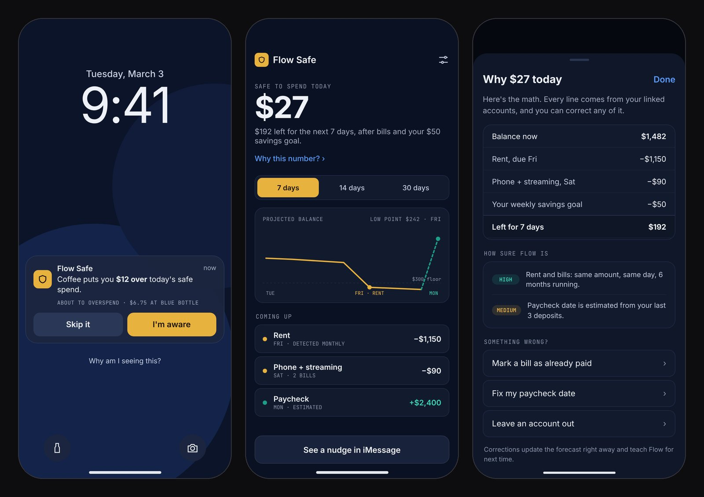

Flow: banking that disappears
AI money tools for Gen Z that show up inside iMessage, Instagram and Uber at the moment someone is about to spend, instead of asking them to open a separate banking app.

The problem
Friends already sort out shared costs in group chats. Then they leave the chat to pay in one app, check their balance in another, and save toward trips in a spreadsheet.
Banking apps show up after the money is spent. The decision itself happens somewhere else, and every switch is a chance to drop the task, forget who owes what, or overspend without noticing.
My approach
Instead of one more app, I designed three small tools that each appear at a specific moment: right after a shared bill, right before a purchase, and while a group plans a trip.
They sit on one shared layer, so each can pass the user to the next one at the right time. Every tool shows its suggestion, offers a choice, and gets out of the way.
Three products, one shared layer
- Reactive · iMessage Flow Split Turns "dinner was $94.50, split 3 ways" into a payment request without leaving the chat.
- Proactive · lock screen Flow Safe Forecasts what's safe to spend over the next 7, 14 and 30 days and nudges before a purchase.
- Social · group chat Flow Together Group savings pots with scheduled contributions, milestones and opt-in accountability.
Handoffs between products
- Safe→SplitSafe warns that dinner will put you over budget. You go anyway, so Split offers: "Split this $85 to stay on track?"
- Together→SplitThe trip pot hits $2,000 but the booking is $2,340. Split offers to divide the $340 gap four ways.
- Split→SafeYou and Sarah split costs eight times a month, so Flow suggests a shared expense pot instead.
Inside each product

Designing for "no"
Most payment flows are drawn for the happy path. I spent as much time on what happens when a friend doesn't pay.
If someone hasn't opened the request, Flow doesn't nag them on its own. It asks the organizer whether to send a gentle nudge, because that's a social call, not a system one.
If someone declines, the screen says plainly that no money moved and offers three ways out: cover their share, nudge again or cancel. Nothing is left half finished.

A heads-up that shows its math
Safe forecasts what's safe to spend from recurring bills, income timing and a savings goal, and speaks up only at a decision point, where the person already is: the lock screen, an iMessage thread or a widget.
Every number explains itself. "Why $27 today" walks through the math, says how sure Flow is about each part, and lets people fix a wrong bill or paycheck date on the spot.
Every nudge can be waved off, tuned or paused. When Flow learns from skipped nudges, it says what it changed and offers an undo.

Saving as a group, without calling anyone out
Flow notices a group goal in the chat and offers a pot. Friends choose to join, then contribute on a schedule or with round-ups.
Celebrate in public, nudge in private. The group sees progress and milestones. Each person's amount stays private unless they share it, and "you're $40 behind" goes only to the person it's about.
Money moves only when the group agrees. Spending the pot needs 3 of 4 approvals, anyone can cancel, and requests expire in 48 hours.
Key decisions
- Build into the chat, not a new app.The conversation is where the decision happens. The cost: Flow is limited by what each platform lets a third party show, so every card had to work in a small space.
- Explain the number, then let people fix it.A forecast people can't question is one they stop trusting. Safe shows its math and confidence, and corrections update it right away.
- Celebrate progress, don't shame.Together marks milestones and keeps each person's contribution opt-in, instead of calling out whoever is behind.
- Show money status in words, not just color.Paid, pending, waiting, declined and failed each get a label and an icon, so status still reads for colorblind users and screen readers.
What exists and what doesn't. A 21-screen clickable prototype covering Split, Safe and Together, three earlier Figma prototypes, architecture docs and a case-study site. The message parsing and spending forecast are designed, not built, and I haven't tested the concept with users yet. If I took it further, I'd start by watching five friend groups settle a real shared bill.

![Curator review queue. On the left, items needing a person: a high-risk eligibility change for Bayview, a new Northstar listing, a Meridian deadline conflict, a founder report about Harbor's amount, and a Cobalt closure marked never automatic. On the right, the selected change shows live versus proposed eligibility, the source quote from the guidelines PDF, the agent's medium confidence, why it needs a person, and that 38 founders would be notified, with Approve, Edit then approve, Ask the program and Reject buttons.](./assets/capstack-review.jpg)
![Eight iPhone screens of Closet, left to right: a closed glass wardrobe on a cloud sky with the note Today: Career fair 2 PM, rain after 5; the same wardrobe with its doors open, shelves lit and labeled hanging tops, jackets, shoes, folded knits, trousers, bags and accessories; Today's pick showing three outfit tabs and a Polished outfit of navy oxford shirt, charcoal blazer, charcoal trousers, chelsea boots and tote; the Why I picked this panel with three reasons, each tagged with its source, and a confidence meter; the Not this sheet with reasons such as too formal and wore it to this group last week; the next outfit with an Adjusted for next time note and Undo; an Ask answer for an AI meetup with its reasons; and Privacy settings with a switch for each calendar and style rules for modest dress.](./assets/closet-flow.jpg)


![Six dark desktop screens of Groundwork, left to right: a worklist of seven CT and MRI studies with context tags such as 1 conflict, 2 missing and Side mismatch; the case context for a CECT abdomen with every line tagged by a blue source chip and a lab report open on the right with the cited line highlighted; two records side by side that disagree about prior surgery; an overdue chest CT follow-up from a 2025 report; the provisional report with the clinical history filled in from records and empty findings and impression fields for the radiologist; and a full-width warning that the request says right knee while the notes say left.](./assets/groundwork-flow.jpg)